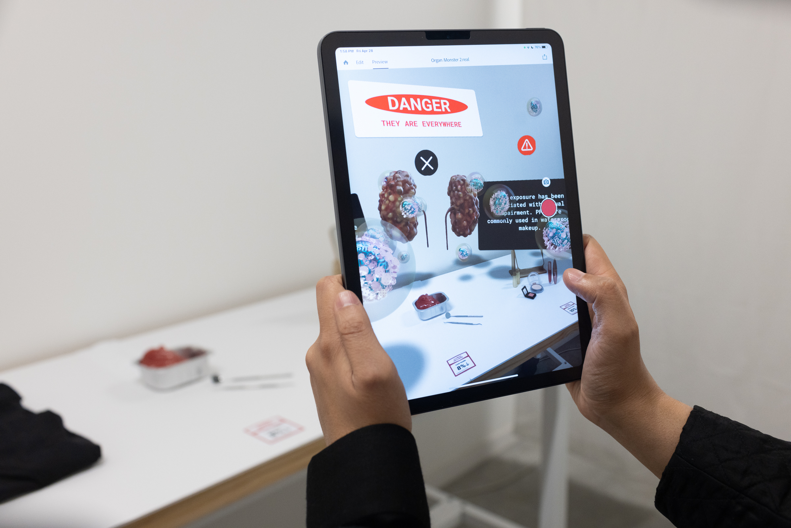

My final project is multiple elements of an installation to raise awareness and reduce harm from PFAS, also known as Forever Chemicals. Since I wanted to both improve my coding skills and practice
the digital fabrication techniques I learned in class, I opted for an emphasis on coding the receipt printer and website along with a few other techniques for building the receipt container and organ.
Final Project
Slideshow of the exhibit

Video Overview
Process
I built upon the molding and casting week's project so I added to that process page. Reference back to week 8 for the organ component of the project with some additonal learnings!
Materials
Electronics and Software
ESP32-Mini-1
Arduino UNO
CSN-a2 micro panel printer x2
Breadboard x2
5V charger x2
Electrical wires
Firebase
VS Code
Receipt Box
1/4 inch white acrylic
Acrylic glue
Corner clamps x2
Trigger clamps x2
Laser cutter
Vinyl cuttter
Red vinyl 8x3 inch strip
Small magnet set x4
Configuring the printer
For this component of the installation,
a printer creates a receipt based on a survey completed by each participant.
The receipt prints the results of their survey.
I selected the esp32-mini-1 because of the wifi capability and steered clear of the esp32-s2,
which I used for previous projects, because it tended to be unreliable and less supported by community forums.
I followed this tutorial to test a sample print by
pressing the printer button while I gave it power - check complete, the printer works.
Next, I wanted to test the connection between the printer and the esp32-mini-1,
but the adafruit printer library was only working with an Arduino UNO so I changed to the
Thermal Printer library
and used the sample code for the esp-32 with some edits below. There was not much documentation on these changes, so it took quite a bit of testing
to finally make it work.
The set up for the electronics were pretty simple so I won't spend much time. I used a 5V battery on each so that the receipt boxes could be completely free standing on the checkout counter.
// made by BinaryWorlds
// Not for commercial use, in other case by free to use it.
// Just copy this text and link to oryginal repository: https://github.com/BinaryWorlds/ThermalPrinter
// I am not responsible for errors in the library. I deliver it "as it is".
// I will be grateful for all suggestions.
// Tested on firmware 2.69 and JP-QR701
// Some features may not work on the older firmware.
#include
#include // if error you can also use SoftwareSerial, check first_view_arduino
#include "TPrinter.h"
// You need to use max3485(for 3V3 logic lvl) or similar, if you have printer with rs232.
// If you use esp32 or other MCU with 3v3 logic level you can try with logic level converter.
// Check which pin pairs are responsible for communication on your board!
const byte rxPin = 10;
const byte txPin = 9;
const int printerBaudrate = 19200; // or 19200 usually
const byte dtrPin = 4; // if used
HardwareSerial mySerial(1);
Tprinter myPrinter(&mySerial, printerBaudrate);
// you can assign here other stream like Serial1, Serial2, Serial3 etc
void setup() {
micros();
Serial.begin(9600); // monitor
mySerial.begin(printerBaudrate, SERIAL_8N1, rxPin, txPin); // must be 8N1 mode
myPrinter.begin(); // you can edit what be happen in Tprinter.cpp, like delay time(2s)
myPrinter.enableDtr(dtrPin, LOW); // pinNR, busyState;
// my printer is busy when DTR is LOW,
// there is a high probability that you should change it to HIGH;
// if wrong - print will no start
// if you dont enable checking dtr, you should call this:
// myPrinter.autoCalculate();
// or you can set it manually using this:
// myPrinter.autoCalculate(0); // turn off
// myPrinter.setTimes(30000, 3000); // oneDotHeight_printTime, oneDotHeight_feedTime in micros
// last is worst option
myPrinter.println("charset:");
myPrinter.printCharset();
myPrinter.println("codepage:");
myPrinter.printCodepage();
myPrinter.justify('C');
myPrinter.println("center");
myPrinter.justify('R');
myPrinter.println("right");
myPrinter.justify('L');
myPrinter.println("left");
uint8_t list[] = {5, 10, 15, 20, 25};
myPrinter.setTabs(list, 5);
myPrinter.print("1");
myPrinter.tab();
myPrinter.print("2");
myPrinter.tab();
myPrinter.print("3");
myPrinter.tab();
myPrinter.print("4");
myPrinter.println();
myPrinter.setMode(FONT_B, DOUBLE_WIDTH, DOUBLE_HEIGHT);
myPrinter.println("FONT_B, bigger");
myPrinter.unsetMode(FONT_B);
myPrinter.println("FONT_A, bigger");
myPrinter.feed(6);
myPrinter.identifyChars("ą ę"); // UTF-8
}
void loop() {
myPrinter.printFromSerial(); // open monitor and print something
}
I then began work on the firebase following a
tutorial I used in a previous week.
A few reminders: There will be a conflict in the libraries on the operator “+”. There is
probably a more elegant solution, but I chose to delete the “+”.
I updated the web app to contain a simple form so that I might test printing survey results to a form.
I then updated my code to read from the firebase database and print to the printer.
Learning: the printer and the esp32 use two different baud rates, but just using the printer baud rate of 9600
still allows for printing to both the receipt printer and the serial monitor. However, if I wanted to add another
output device with a different baud rate to the same esp32 I imagine I would run into challenges.
Customizing the receipt prints and website
Now that the printer is working with a generic form and print, it's time to make it relevant to the project.
Update the firebase to contain the relevant fields
Update or create the following files
script.js. This will enable firebase communication necessary below and calculations for the survey page.
main.cpp. It will now communicate with the firebase to update the values once the below files are in place.
survey html. When a user clicks true there should be an increase of 100 on the store credit. If they click false the money owed will increase by 100.
When they click the "print receipt" button at the bottom of the page, the firebase database should update with their moneyOwed and storeCredit values shown on the right panel of this screen. The printer should also print a receipt with that user's Money Owed and Store Credit.
To make for a more realistic checkout experience, create a welcome html page
to start the checkout process. This button on this page will take users to the survey.
Once the code is working, host the website on github pages. One challenge with platform io is that the index page is inside of the public folder, which sometimes prevents hosting on github pages. I made a index.html file at the main folder and redirected it to public/index.html
The "forever" printer
One of the project goals was to show the cumulative impact of PFAS consumption using a never-ending printer. This printer's
receipts represented the constant purchase of goods with PFAS. Since this printer did not need to respond to an input, coding an Arduino UNO
to output receipts consistently worked well.
/*------------------------------------------------------------------------
Based on sketch for Adafruit Thermal Printer library for Arduino.
#include "Adafruit_Thermal.h"
#include "adalogo.h"
#include "adaqrcode.h"
#include "SoftwareSerial.h"
#define TX_PIN 6 // Arduino transmit YELLOW WIRE labeled RX on printer
#define RX_PIN 5 // Arduino receive GREEN WIRE labeled TX on printer
SoftwareSerial mySerial(RX_PIN, TX_PIN); // Declare SoftwareSerial obj first
Adafruit_Thermal printer(&mySerial); // Pass addr to printer constructor
// Then see setup() function regarding serial & printer begin() calls.
// Here's the syntax for hardware serial (e.g. Arduino Due) --------------
// Un-comment the following line if using hardware serial:
//Adafruit_Thermal printer(&Serial1); // Or Serial2, Serial3, etc.
// -----------------------------------------------------------------------
void setup() {
pinMode(7, OUTPUT); digitalWrite(7, LOW);
mySerial.begin(19200); // Initialize SoftwareSerial
//Serial1.begin(19200); // Use this instead if using hardware serial
printer.begin(); // Init printer (same regardless of serial type)
}
void loop() {
// clothes receipt
printer.doubleHeightOn();
printer.println(F("Forever Mart"));
printer.doubleHeightOff();
printer.println("How long is forever?");
printer.feed(1);
delay(3000L); // Sleep for 3 seconds
printer.setFont('B');
printer.println("Date: 2023-04-28 Time: FOREVER");
delay(3000L); // Sleep for 3 seconds
printer.println("Cashier: PFAS producing brands");
printer.println("Customer: Those who purchase PFAS containing clothes");
printer.setFont('A');
printer.println("Item: Waterproof clothing");
//barcode
printer.printBarcode("FOREVER", CODE39);
printer.setBarcodeHeight(100);
printer.printBarcode("123456789123", UPC_A);
printer.feed(2);
printer.println("PFAS (Per- and polyfluoroalkyl substances) are a group of man-made chemicals that can have harmful effects on human health and the environment.");
printer.feed(1);
delay(3000L); // Sleep for 3 seconds
printer.println("Thank you for visiting. Don't forget to shop PFAS-free!");
printer.feed(2);
printer.sleep(); // Tell printer to sleep
delay(3000L); // Sleep for 3 seconds
printer.wake(); // MUST wake() before printing again, even if reset
// makeup
printer.doubleHeightOn();
printer.println(F("Forever Mart"));
printer.doubleHeightOff();
printer.println("How long is forever?");
printer.feed(1);
delay(3000L); // Sleep for 3 seconds
printer.setFont('B');
printer.println("Date: 2023-04-28 Time: FOREVER");
delay(3000L); // Sleep for 3 seconds
printer.println("Cashier: PFAS producing brands");
printer.println("Customer: Those who purchase PFAS containing makeup");
printer.setFont('A');
printer.println("Item: Waterproof mascara");
// Barcode examples:
// CODE39 is the most common alphanumeric barcode:
printer.printBarcode("ADAFRUT", CODE39);
printer.setBarcodeHeight(100);
// Print UPC line on product barcodes:
printer.printBarcode("123456789123", UPC_A);
printer.feed(2);
printer.println("PFAS are in waterproof makeup, but you can shop PFAS free at Axiology (Axiology is also zero waste). BH Cosmetics, Burts Bees, Credo, cocokind, Fenty Beauty, Follain Florence by Mills, HandM, Kiko Milano, Lashfood, Mad Hippie ,Megababe, Pacifica , Physicians Formula, PYT Beauty, The Ordinary. source: greenmatters");
printer.feed(1);
delay(3000L); // Sleep for 3 seconds
printer.println("Thank you for visiting. Don't forget to shop PFAS-free!");
printer.feed(2);
printer.sleep(); // Tell printer to sleep
delay(3000L); // Sleep for 3 seconds
printer.wake(); // MUST wake() before printing again, even if reset
printer.setDefault(); // Restore printer to defaults
}
The Receipt Box
The receipt box used 1/4 inch white acrylic and was laser cut using the below svg.
The box was assembled using acrylic glue, clamps, and magnets for the back panel to come on and off easily to access the battery
and electronics.
I tested a few designs for the vinyl cut sticker, but the vinyl cutter seemed to have trouble
with the smaller letters so I went with the second design.
The Forever Juice Label
The final Forever Juice label was simply printed on to adhesive sticker paper, but there was a good lesson learnt along the way. The first attempt
was on a heat transfer machine. The process was fairly simple - print a reverse image, heat stamp it on to the adhesive, scrape the adhesive. As you can see below, the
sticker had a black background and vibrant colors. After several tests, it was clear that the heat transfer could not absorb enough pigment for a fully black background.
Instead, it was more of a grey. This was a simple insight, but given that it is a new machine at the SEC, it will be helpful for future prints.